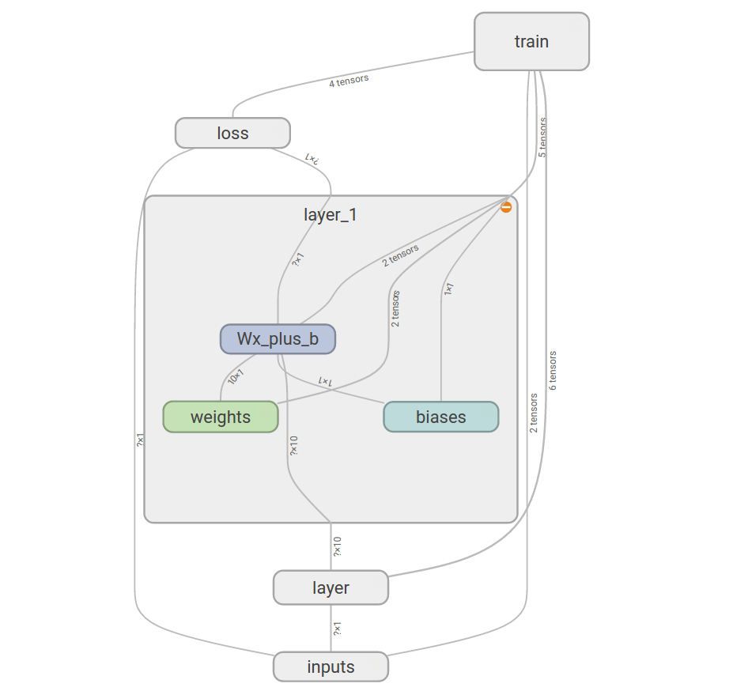
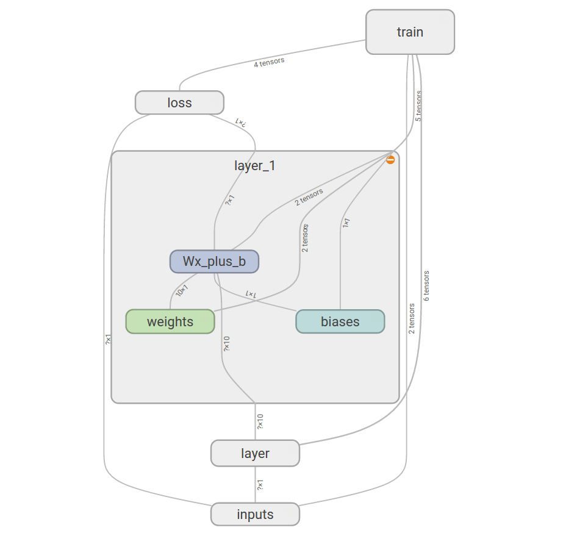

Artificial Intelligence Club
the code used in this note is u2bTensorflowTutor.py
github repository: https://github.com/linzexinmasterchief/TensorflowLearn
this code is currently able to train and save the tensorflow models, the critical variables to be save are the "x" and "sess", x indicates the input matrix ["none", 784] (the pictures are 28 x 28 pixels large, therefore 784 pixels are used, the idea of the input layer is that the pictures are "flattened" from a two dimension matrix to a one dimension matrix. Although this operation destroyed the 2D construct of the picture, it made the picture data easier for tensorflow network to process. By the way, the parameter "none" means "any number", which means the matrix could contain any amount of images)
I've made a lot of comments in the code in order for you to understand
 

put this in your code after the session sess is defined:
writer = tf.summary.FileWriter('./graphs', sess.graph)
writer.close()
use this command in the terminal to start the tensorboard at 127.0.0.1:6006
tensorboard --logdir="./graphs"
the use of CNN provide artificial intelligences the ability to identify structured data matrix such as pictures, in the previous approches, our AI could only first flatten the 2D picture into a 1D array, then find the patterns of 0 and 1s. However, that approach obviously destroyed some critical informations, for example: the relative postion of each object, the relationship between different parts of the picture... Therefore, we need a new model, which is CNN.
the theory of CNN itself is pretty simple and straight forward: it is like using a magnifier to scan a map, but in the opposite way. The program will first use the smallest square: 5x5 for example, small details like curves, vertical lines, and horizontal lines. The small square will move a little at a time(1 step could be 1px, 2px .etc), the scanner square itself is also a matrix which contains the special pattern it want to detect, in each step, the matrix is the square will be doing a dot product with the square scanned by the square: this is called a convolution.
The finished version of kaggle recognization project source code
should be able to run on any machine with tensorflow installed, both cpu and gpu version should work as predicted.
The basic theory of the project is just as simple as a normal CNN we learned in ECA.
The kaggle page of this project just in case anyone is interested.